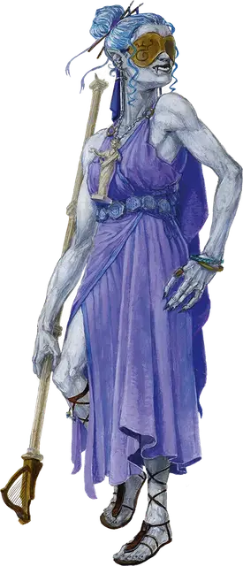

Облачный великан играющий с судьбой
Cloud Giant Destiny Gambler
Огромный Великан (Бард), любое мировоззрение

Класс Доспеха 15 (природный доспех)
Хиты 337 (27к12 + 162)
Скорость 40 футов, летая 40 футов (парит)
| мод | спас | ||
|---|---|---|---|
| СИЛ | 27 | +8 | +8 |
| ЛОВ | 12 | +1 | +1 |
| ТЕЛ | 22 | +6 | +12 |
| мод | спас | ||
|---|---|---|---|
| ИНТ | 19 | +4 | +10 |
| МДР | 16 | +3 | +9 |
| ХАР | 22 | +6 | +12 |
Навыки Восприятие +9, Обман +18, Проницательность +9
Иммунитет к урону звук
Чувства истинное зрение 30 футов (требуется Облачная руна), пассивное Восприятие 19
Языки Общий, Великаний
Опасность 19 (22000 опыта)
Бонус мастерства +6
Особенности
Облачная руна. У великана есть облачная руна, начертанная на маске. Держа в руках или надевая маску с руной, великан получает истинное зрение на 30 футов и может использовать действие Громовой раскат и реакцию Отмена заклинания. Маска с Облачной руной имеет КД 15; 45 хитов; и обладает иммунитетом к урону некротической и психической энергией, а так же урону ядом.
Маска восстанавливает все свои хиты в конце каждого хода, но обращается в пыль, если ее хиты уменьшаются до 0 или когда великан умирает. Если руна уничтожена, великан может начертать Облачную руну на маске, находящейся в его распоряжении, после окончания короткого или продолжительного отдыха.
Заклинания преуспевшего игрока с судьбой. Играющие с судьбой не довольствуются простым выигрышем сокровищ, предпочитая играть за власть и благосклонность существ, обладающих великой магией. Легенды, передаваемые из поколения в поколение облачными великанами, рассказывают о великане, который перехитрил небожителя, чтобы заполучить перо, пропитанное светом потухшего солнца, и о другом, который получил часть силы от повелителя демонов Оркуса. Чтобы изобразить играющего с судьбой, выигравшего подобные пари, вы можете добавить одно или несколько из предложенных заклинаний к действию Использование заклинаний, каждое из которых можно наложить 1 раз день: круг смерти [circle of death], поражение [harm], Отилюков ледяной шар [Otiluke's freezing sphere], солнечный луч [sunbeam].
Действия
Мультиатака. Великан совершает три атаки Летающим посохом.
Летающий посох. . Рукопашная или дальнобойная атака оружием: +14 к попаданию, досягаемость 10 футов или дистанция 30/90 футов, одна цель. Попадание: 18 (3к6 + 8) дробящего урона плюс 16 (3к10) урона звуком. Попадание или промах: Посох волшебным образом возвращается в руку великана сразу же после дальнобойной атаки.
Использование заклинаний. Великан накладывает одно из следующих заклинаний, используя Харизму в качестве базовой характеристики и без использования материальных компонентов (Сл спасброска от заклинаний 20):
• Неограниченно: обнаружение магии [detect magic], туманное облако [fog cloud], свет [light], малая иллюзия [minor illusion];
• 1/день каждое: вещий сон [dream] (накладывается действием), газообразная форма [gaseous form], образ [major image];
Громовой раскат (требуется Облачная руна). Великан волшебным образом призывает грозовую тучу, которая заполняет сферу радиусом 30 футов с центром в точке, которую гигант может видеть на расстоянии в пределах 60 футов от себя. Облако огибает углы. Каждое существо в этой области должно совершить спасбросок Телосложения Сл 20, поскольку облако издает оглушительный грохот. В случае провала существо получает 52 (8к12) урона звуком и падает ничком. В случае успеха существо получает только половину этого урона. Раскат грома слышен на расстоянии 300 футов от центра облака.
Область облака сильно заслоненна. Облако держится до начала следующего хода великана или до тех пор, пока сильный ветер не разгонит его.
Реакции
Отмена заклинания (требуется Облачная руна). Когда великан видит существо в пределах 60 футов от себя, накладывающее заклинание, он пытается его прервать. Если существо накладывает заклинание используя ячейку заклинаний 3-го уровня или ниже, то заклинание проваливается и не оказывает никакого эффекта. Если существо накладывает заклинание 4-го уровня или выше, оно должно преуспеть в спасброске Интеллекта Сл 18, иначе заклинание проваливается и не оказывает никакого эффекта.
Описание
Облачные великаны возвышаются в иерархии, накапливая ценные и красивые сокровища — часто с помощью азартных игр. В то время как многие облачные великаны довольствуются тем, что рискуют своим богатством в играх друг с другом, те, кто стремится к вершине своего положения, бросают вызов всевозможным существам в азартных играх и остроумии. Играющий с судьбой - это облачный великан, который выигрывает пари по все более возрастающим ставкам у других великанов, маленьких народов и даже существ с Внешних планов.
Играющие с судьбой носят полумаски, закрывающие их глаза. Руническая магия масок позволяет этим великанам не только нормально видеть, но и видеть сквозь иллюзии, невидимость, тьму и другие формы магического обмана.
Годы успешных ставок делают играющих с судьбой настолько уверенными в своей способности преуспеть в любом испытании, что они приглашают потенциальных соперников называть условия пари. Те, кто достаточно глуп, чтобы бросить вызов боем, быстро обнаруживают, что магическое мастерство этих великанов почти не имеет себе равных.